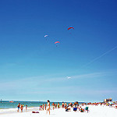
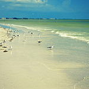
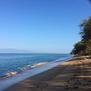
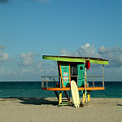
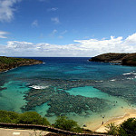
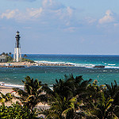
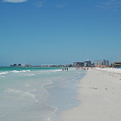
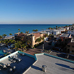
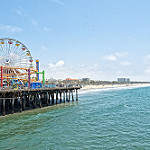
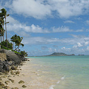

You don't have to travel outside of the country for a great beach get-away. According to today.com, ten of the best beaches in the world are just hours away.
The Best Beaches in America
Location
About
Image
1. Clearwater Beach: Clearwater, Florida
Three miles of white and and crystal water. This floridian beach is located near Tampa and is the perfect

2. Siesta Beach: Siesta Key, Florida
This beach makes for a great family vacation. There is beach volleyball, tennis and picnic areas to make for a fun beach day

3. Ka'anapali Beach: Lahaina Hawaii
Located on Maui, this beach provides a great surfing scene and beautiful cliffs for cliff diving. There are also zip lining tours around the beach

4. South Beach: Miami Beach, Florida
This beautiful beach has crystal water and makes for a relaxing beach day. With fun night life, this beach is a great spot to have fun

5. Hanauma Bay Nature Reserve: Honolulu, Hawaii
Not only is this beach a gorgeous beach, visitors can see one of the greatest marine ecosystems on their beach day. There are tons of colorful fish and is great for a snorkeling excursion

6. Fort Lauderdale Beach: Fort Lauderdale, Florida
A beautiful coast with tons of fun beach activities. After a fifteen year remodle this beach is the best it has ever been and visitors are sure to enjoy it

7. St.Pete Beach: St. Pete Beach, Florida
Another stunning Floridian Beach known for its breathtaking sunsets and endless ocean activities. Enkoy a beach where it is always sunny

8. Hollywood Beach: Hollywood, Florida
This beach is perfect for a family get-away, with a long boardwalk and several beach attractions. Don't forget to visit the Hollywood Beach Theatre!

9. Santa Monica Beach: Santa Monica, California
On the Pacific Coast, enjoy the beautiful view of the mountains in the distance. The best trip away from the busy cities of Los Angeles and Beverly Hills, with a great pier full of fun

10. Lanikai Beach: Kailua, Hawaii
This beach is well known for the stunning ocean with gentle waves. Many visitors enjoy kayaking and snorkeling

Where to Eat
The television show, Beach Bites starring Katie Lee, broadcasted on the Cooking Channel, shows all the best beach eats all over the worl. Some of the best restaurants include: